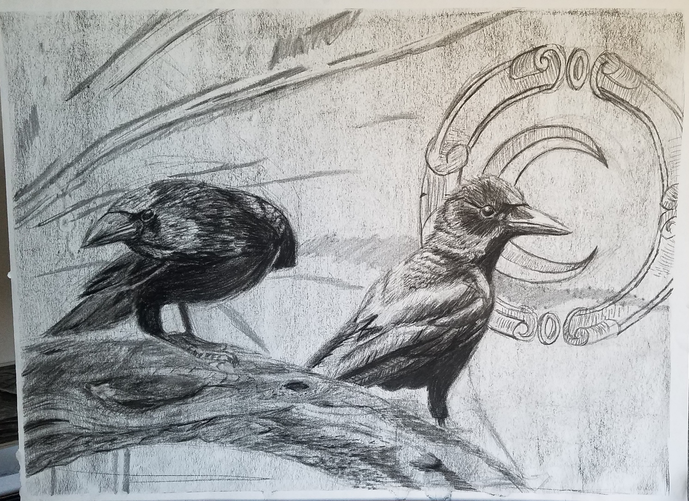
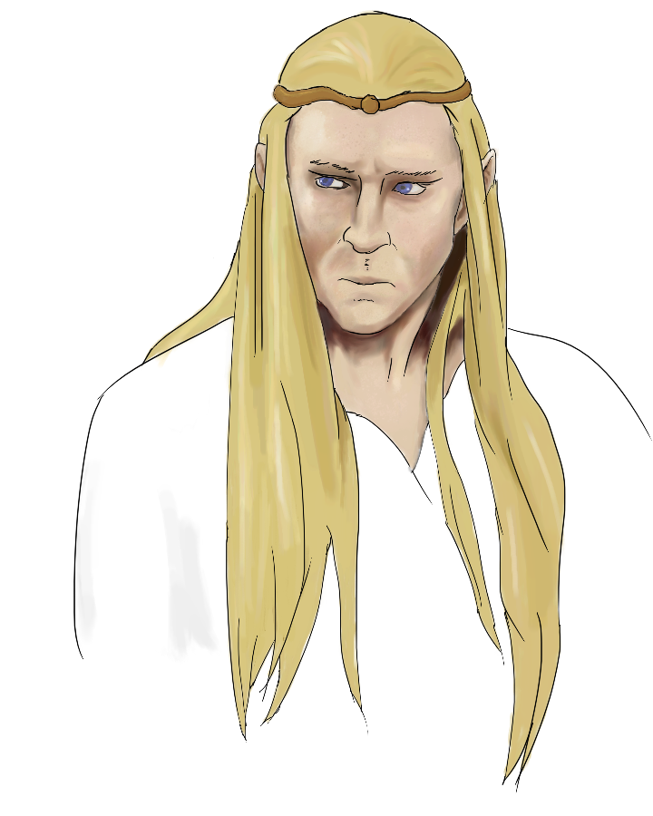

A Short Story of the Longest Night
The pandemic begins.
Weak and strained, a cough fills the empty air. As soon as sleep sets in, my lungs stop and my slow pulse fades away. Sit up.
I can't breathe. In. Out. In. I can't sleep. I'll die. Another hour slips away leaned against a wall, forcing every breath.
Just breathe. I won't go tonight. Should I write a letter? There's too much to say... I won't go tonight. In. Out. In.
'Am I cold? I'm drenched. I need to sleep.' Slow and encumbered, I slip down again. There is no up, no down. I've lost my sense
of space. Slowly gliding in a void, my mind loses it's hold. Heart rate plummeting, a burst of adrenaline reminds me to live
again. This is the last night of my life. I need water. Get up, eyes open. I can hardly walk. Every shadow looms and lunges.
The wavering penumbra of my sight is frantic; the collapsing periphery of my mind is the thin barrier of hell.
3:27am. 105. 4 pills. A numbing conflagration. How long have a been here? The room turns itself, and the world disavows my pitiful
perspective. The floor becomes a wall. Effortlessly, I am affixed. Left, laundry defies gravity. Right, a crooked door. Below,
a pouring sink surrenders orientation. Ahead, a bulb blares and a fan groans.
The light of the bathroom consumes the world. I'm alone, engulfed by my opposition.
Am I
breathing?
Where am I?
My legs finally move. Dawn. The faint blue light whispers through the blinds. My chest flickers on it's own again.
I had the opportunity to work with charcoal last year.

I haven't done much digital painting, but here is an Elf from The Lord of the Rings

I've spent the last few years working on game projects. Here's an unfinished BMW!

Home Page
Contact Us